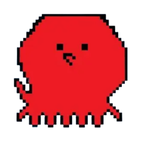

ホーム
友だち、グループ、Story を同じ入口にまとめる。

yurucommu の同じアカウントと API をホーム / トーク / タイムラインで開く UI。 Yurumeet は hosted app ではなく、Takosumi、Cloudflare、 セルフホスト環境に置いて動かすソフトウェアです。
友だち、グループ、Story を同じ入口にまとめる。
TakosUI のトーク画面をそのまま中心にする。
同じ投稿タイムラインを Yurumeet の流れで見る。
Story を開いて、いいねと共有まで行う。
Yurumeet をビルドすると、同じ yurucommu のアカウントと API をトーク中心の UI で開けます。yurumeet.com は紹介サイトで、実際の Yurumeet は Takosumi / Cloudflare / self-host の配信先に同梱して動きます。